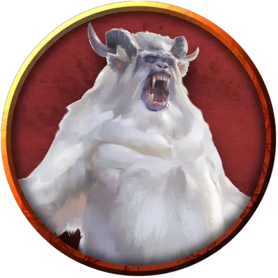

Отвратительный йети Алловака
Allowak Abominable Yeti
Огромный Монстр, нейтральный

Класс Доспеха 15 (природный доспех)
Хиты 137 (11к12 + 66)
Скорость 40 футов, лазая 40 футов
| мод | спас | ||
|---|---|---|---|
| СИЛ | 24 | +7 | +7 |
| ЛОВ | 10 | +0 | +0 |
| ТЕЛ | 22 | +6 | +6 |
| мод | спас | ||
|---|---|---|---|
| ИНТ | 16 | +3 | +3 |
| МДР | 13 | +1 | +1 |
| ХАР | 10 | +0 | +0 |
Иммунитет к урону холод
Чувства тёмное зрение 60 футов, пассивное Восприятие 15
Языки Общий, Язык Йети
Опасность 9 (5000 опыта)
Бонус мастерства +4
Среда обитания Арктика
Особенности
Страх огня. Если йети получает урон огнём, он до конца своего следующего хода совершает с помехой броски атаки и проверки характеристик.
Тонкий нюх. Йети совершает с преимуществом проверки Мудрости (Восприятие), полагающиеся на обоняние.
Снежный камуфляж. Йети совершает с преимуществом проверки Ловкости (Скрытность), когда пытается спрятаться на снежной местности.
Действия
Мультиатака. Йети может использовать Леденящий взгляд и совершает две атаки когтем.
Коготь. . Рукопашная атака оружием: +11 к попаданию, досягаемость 5 футов, одна цель. Попадание: Рубящий урон 14 (2к6 + 7) плюс урон холодом 7 (2к6).
Леденящий взгляд. Йети нацеливается на одно существо, которое видит в пределах 30 футов от себя. Если цель видит йети, она должна преуспеть в спасброске Телосложения Сл 18 от этой магии, иначе получит урон холодом 21 (6к6) и станет парализованной на 1 минуту, если только не обладает иммунитетом к холоду. Цель может повторять этот спасбросок в конце каждого своего хода, оканчивая эффект на себе при успехе. Если спасбросок цели был успешным, или эффект на ней закончился, цель получает иммунитет к Леденящему взгляду этого йети на 1 час.
Холодное дыхание (перезарядка 6). Йети выдыхает холодный воздух 30-футовым конусом. Все существа в этой области должны совершить спасбросок Телосложения Сл 18, получая урон холодом 45 (10к8) при провале, или половину этого урона при успехе.